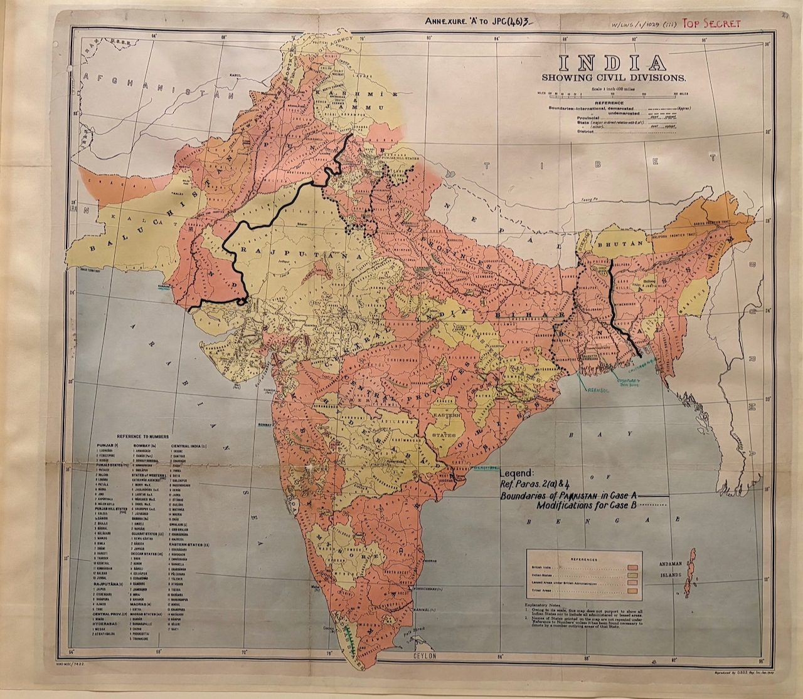

A Top Secret British staff map from the planning that preceded Partition – a standard India Showing Civil Divisions base sheet overprinted with two proposed boundary schemes for a future Pakistan. These are alternatives under examination in 1946, not the Radcliffe boundary ultimately announced in August 1947.
The object
The base is a standard India Showing Civil Divisions sheet reproduced by the Geographical Section, General Staff (G.S.G.S.), the British War Office’s mapping body, at one inch to one hundred miles. It is overprinted as “Annexure ‘A’ to JPC(46)3” and stamped TOP SECRET. A heavy line marks the “Boundaries of Pakistan in Case A,” with a dotted line for “Modifications for Case B.” The sheet belongs to classified official planning; the committee referenced as JPC is not identified on the sheet itself.
A contingency, not yet a border
The map sets out alternative schemes for a possible Pakistan in the north-west and north-east. The definitive Punjab and Bengal boundaries emerged from a different commission and were announced only after independence in August 1947.
The gaze
A line on a staff map could be moved with a pencil, and Case B exists because Case A was negotiable. Few objects in the collection show so plainly that official cartography was a form of decision-making: provinces and populations are sorted into cases, and the departing power treats the boundary as a variable in its own planning for defence, administration and settlement. The compressed timetable that followed would be borne on the ground by millions.